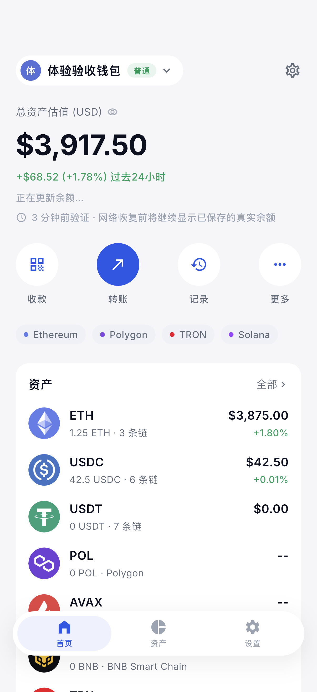
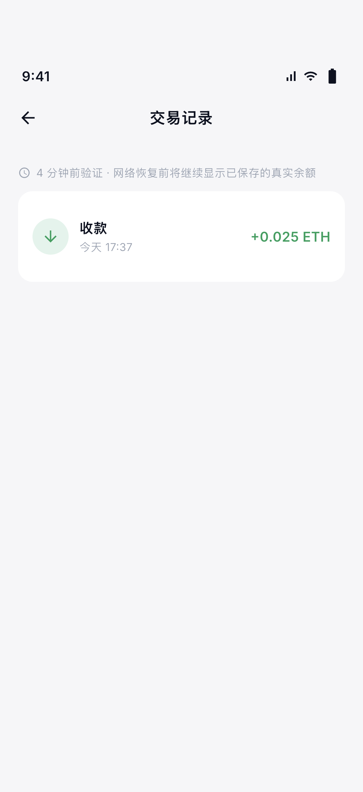
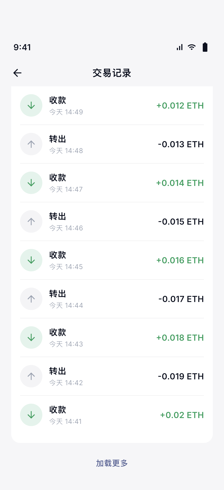
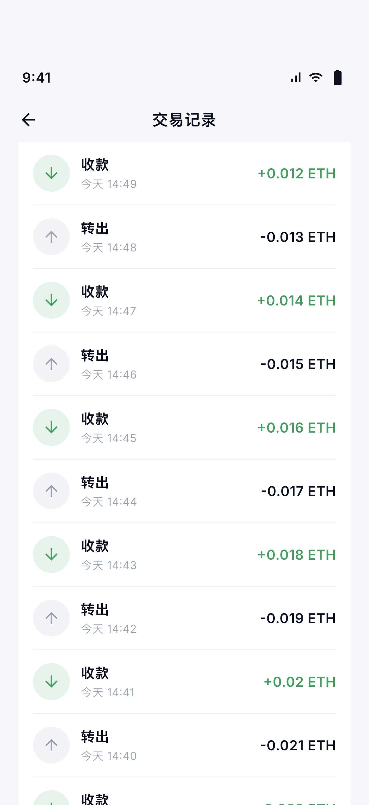
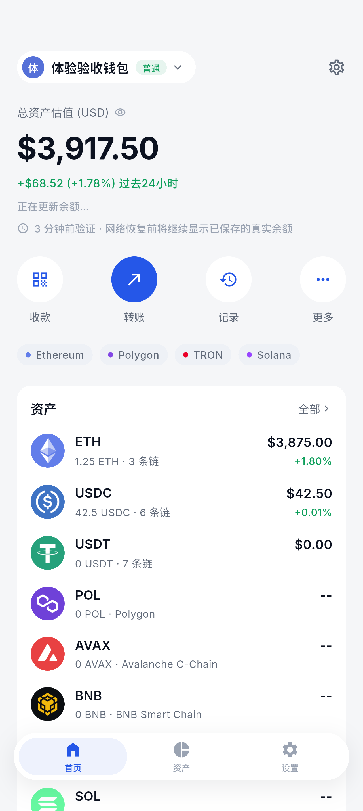
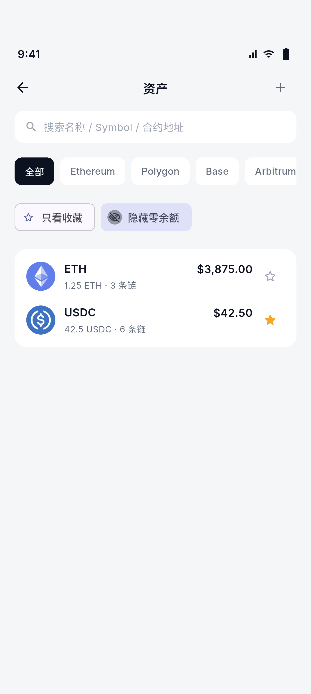
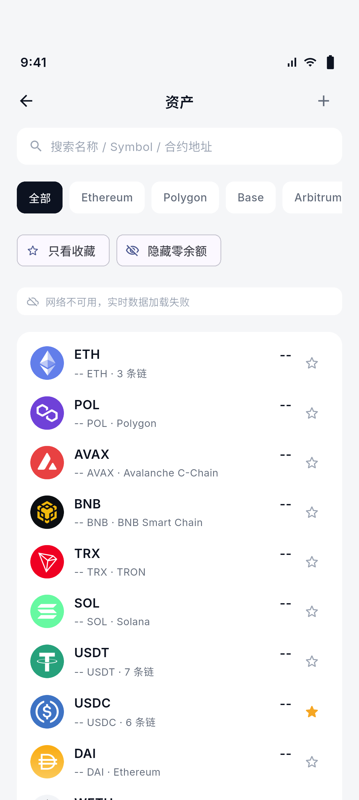
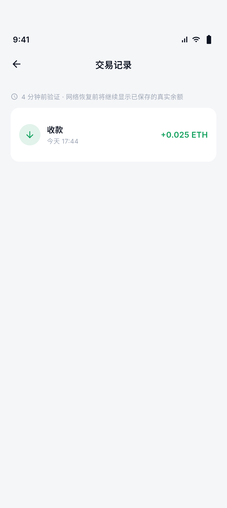
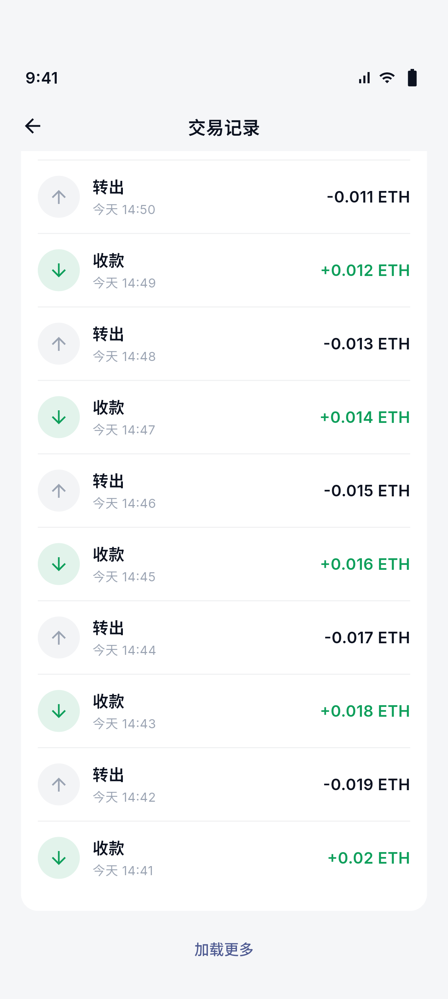
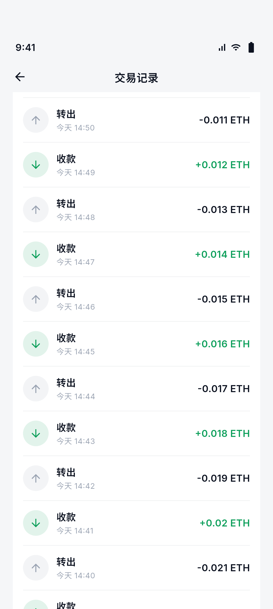

可信市场快照
版本化、钱包隔离、网络组合隔离；仅用于展示，转账仍强制读取新余额、手续费和 nonce。
本轮聚焦“打开快、数据可信、弱网可用、操作有反馈”。实现已经通过代码审查、 Flutter/Go 全量回归、Gateway 生产验证，以及 iOS 与 Android 同步骤视觉验收。
这版已经从“网络慢时整页等待、失败时空白”提升到可信的 stale-while-revalidate 体验：先显示上次验证数据，再后台刷新；失败保留旧值并标注时间，不伪造 0， 不回退到生产演示数据。距离一线钱包仍有系统级推送、真机性能基线等下一阶段能力， 但本轮目标已经形成闭环。
发布 20260730T085324Z-worktree-v1.9.1-portfolio，
SHA-256 ff4e80de…17d89eab。内网 127.0.0.1:8119
和公网 https://gateway.kt-wallet.com 均已验证
kt_getPortfolio 返回真实链上余额。
按产品体验而不是代码文件来验收每项改动。
| 体验点 | Before | After | Why |
|---|---|---|---|
| 冷启动余额 | 等待所有 RPC；常见 -- | 先显示按钱包/网络隔离的上次验证值 | 立即可读，同时保留真实性 |
| 刷新失败 | 已知余额可能被 error/空白替换 | 保留 last-good，明确显示验证时间与离线状态 | 弱网不跳值，不把失败误报为 0 |
| 余额请求 | 原生币与 Token 分链重复往返 | kt_getPortfolio 单 HTTP 往返，逐链隔离 | 降低移动网络握手与队头阻塞 |
| 交易历史 | 每次进入重新查询；固定首屏 | 持久缓存 + 本地 Pending 合并 + 20→100 有界加载 | 打开即见记录，长历史可继续浏览 |
| 资产管理 | 固定顺序，零余额占据首屏 | 收藏优先、价值排序、可隐藏确定为零的资产 | 高频资产更快触达，未知状态不会被误隐藏 |
| 操作手感 | 关键入口缺少一致的触压反馈 | 120ms、0.97 缩放、easeOutCubic + 轻触觉 | 反馈即时克制，并避免装饰性过动效 |
| 交易状态 | 离开记录页后确认变化不明显 | 前台轮询确认后全局顶部提示 6 秒 | 不阻塞当前操作，状态变化可感知 |
| 可观测性 | 关键刷新耗时不可见 | 本地有界指标 + DevTools Timeline，零敏感字段 | 可量化体验，不采集地址、金额和交易内容 |
版本化、钱包隔离、网络组合隔离；仅用于展示，转账仍强制读取新余额、手续费和 nonce。
合并本地 submitted/pending 和链上记录；错误链保留缓存，成功链独立更新，最大 100 条。
最多 16 个账户、聚合并发 4、Token 并发 4；老 Gateway 或单链失败自动兼容回退。
收藏、隐藏零余额、触觉、按压动效和 Semantics；中文、英文、日文文案同步生成。
同一套确定性验收数据，截图由运行中的 iOS App 容器直接导出。






Android 15 / API 35 同步骤运行，原图由 App 沙箱导出。






| 范围 | 命令 / 环境 | 结果 | 覆盖 |
|---|---|---|---|
| 静态检查 | flutter analyze | PASS | 整个 workspace，无 issue |
| KT Wallet | flutter test | 530 PASS | Widget、状态、网络、交易、Golden |
| KT Cold Signer | flutter test | 105 PASS | PIN、反重放、签名流程、安全检查、Golden |
| 共享包 | 6 个 package 全量测试 | PASS | Airgap、Chains、Crypto、UI Kit、DB、Test Support |
| Gateway | go vet ./... + go test ./... | PASS | Handlers、RPC、缓存、上游、限流 |
| Gateway 竞态 | go test -race ./... | PASS | 聚合账户与并发 Token 查询 |
| iOS 集成 | iPhone 17 Pro Simulator | PASS | 6 步视觉与行为断言 |
| Android 集成 | Pixel 9 Pro · API 35 | PASS | 6 步视觉与行为断言 |
| 生产部署 | systemd + public HTTPS | PASS | active、监听、health、真实 portfolio |
-race 验证无数据竞争。交易确认提示目前是 App 前台/恢复前台后的本地轮询通知，不是系统级后台 Push； 后者仍需要设备 token 注册、服务端订阅与 APNs/FCM 基础设施。截图来自模拟器， 发布前仍应在低端 Android 真机和至少一台 iPhone 上采集启动、滚动、刷新与内存基线。